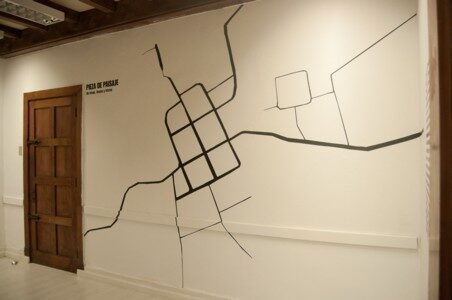
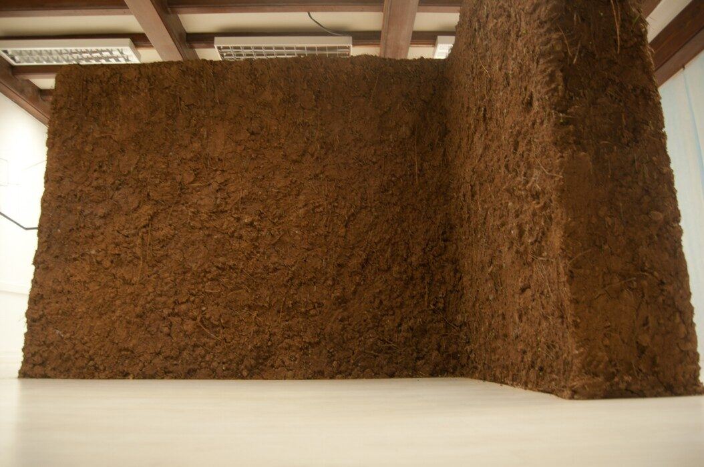
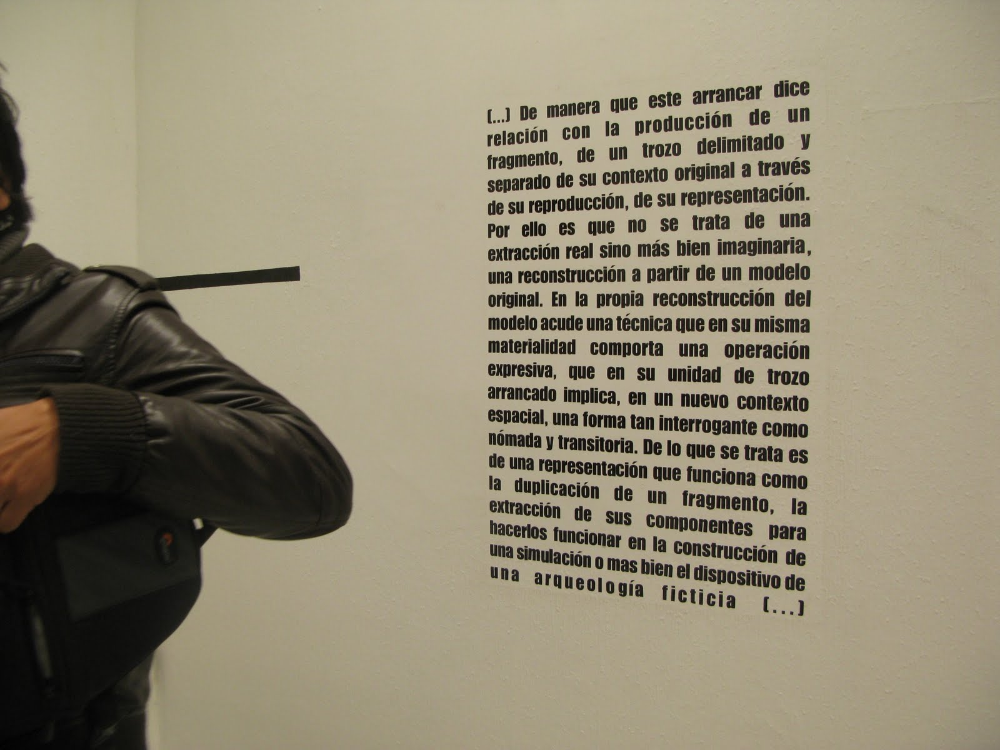
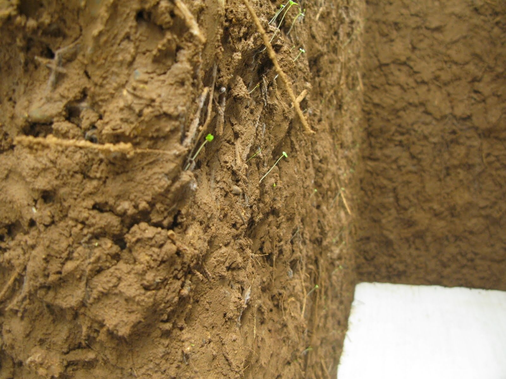

Dossier Nº 011
Pieza de Paisaje / Trazos, Trizas y Trozos
Muro de tierra en forma de letra ele para la Sala Leonidas Emilfork, a partir de un viaje exploratorio al poblado de San Pedro de Alcántara, comunidad de la zona sur de la comuna de Paredones. Estructura y trillaje de madera, malla gallinera y barro con paja.
Trazos, trizas y trozos
La pieza se plantea como una aproximación poética a la geografía, dada por el juego de palabras entre Trazos, Trizas y Trozos: trazos, en tanto caserío fundado sobre una superposición de trayectos —el camino del Inca, los recorridos evangelizadores jesuitas que plantaron 24 palmas en forma de cruz—; trizas, por la arquitectura colonial de adobe (Zona Típica desde 1974) resquebrajada por el terremoto; trozos, los fragmentos de esa arquitectura hecha pedazos, y también los vestigios que restan de los trazos originales: las 12 palmas chilenas que sobreviven de las 24, y la Piedra del Sol, único vestigio del camino del Inca en la región, recostada como un menhir desmoronado entre el camino de tierra y el estero.
Los brotes
Llamó la atención que a pocos días de inaugurada la obra, el muro de tierra se llenara de brotes — la materia prima de la pieza, viva, siguió germinando después de construida.





34°46′S · 71°50′O